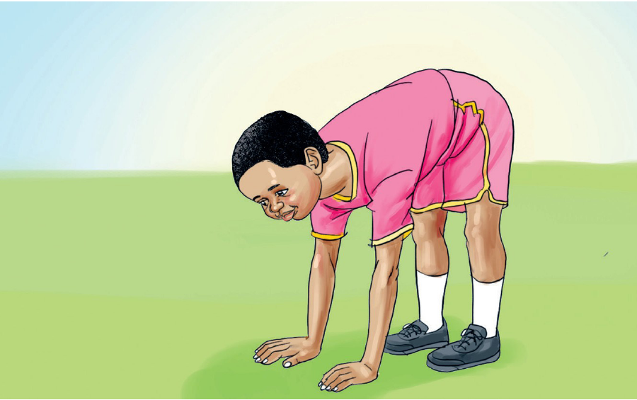

Tujinyooshe miili yetu
Jinsi ya kujinyoosha kwa kuinama
Simama wima.
Inama kisha shika chini.
Rudia mara nyingi.

Mwanafunzi amesimama akiwa amenyoosha miguu, ameinama mbele na amegusa chini kwa mikono yote miwili.
59